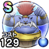

モヒカント
覚醒千里行ヒイラギどうじ編バッファロン＆モヒカントのほこらこころ最大コスト+4スキルの体技ダメージ+10%イオ属性耐性+10%守備減耐性+10%バッファロンのこころS装備時スキルの体技ダメージ+10%バッファロンのこころS装備時会心率+5% / 8.5点
くわしい特徴
【ランク特殊効果】 こころ最大コスト+4スキルの体技ダメージ+12%イオ属性耐性+10%守備減耐性+20%バッファロンのこころS装備時スキルの体技ダメージ+11%バッファロンのこころS装備時会心率+8%こころ最大コスト+4スキルの体技ダメージ+10%イオ属性耐性+10%守備減耐性+10%バッファロンのこころS装備時スキルの体技ダメージ+10%バッファロンのこころS装備時会心率+5%